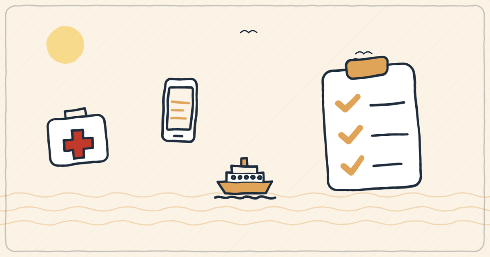

Cruise Health Questionnaire: What It Asks, What a Yes Means

The cruise health questionnaire is a short set of yes-or-no questions about vomiting, diarrhea, fever and similar symptoms in the few days before boarding. Most lines put it in the app or online check-in and ask you to confirm it again close to sailing day. A yes triggers a chat with the medical team, not an automatic refusal.
The cruise health questionnaire asks whether you have had vomiting, diarrhea, fever or a few related symptoms in the days before you board, and whether anyone close to you has. It takes under a minute, you complete it during online check-in or in the line's app, and a yes answer leads to a conversation with the ship's medical team at the terminal rather than a closed door.
When do I fill in the cruise health questionnaire?
Every major line builds it into online check-in, which opens anywhere from a couple of weeks to a few months before sailing depending on the line. Because answers given a month out say nothing about how you feel on the day, most lines also ask you to confirm the form again close to departure, often within 24 to 72 hours of boarding, through the app or an email link.
At the terminal, staff may ask the same questions out loud while they check your passport and boarding pass. If you answered no online but have since come down with something, say so then. The honest answer at the door is the one that protects you.
The form sits alongside the documents the terminal checks, so it is worth reading what Canadians need to board from a US port at the same time if you are sailing from Florida, Seattle or New York.
What questions are on the cruise ship health form?
The exact wording changes from line to line and with current public health advice, but the list is short and nearly always covers the same ground:
- Have you had vomiting or diarrhea in the past three days (some lines say 48 hours, some say 72)?
- Have you had a fever, chills or flu-like symptoms recently?
- Do you have a new cough, sore throat or shortness of breath?
- Have you been in close contact with anyone who has had those symptoms?
- Have you recently visited an area under a current health advisory, when one is in force?
Answer no to everything and you are done. The form does not ask about allergies, medications, your blood pressure or anything in your medical history.
Does the health questionnaire ask about my medical conditions?
No, and this is the point most first-time cruisers get wrong. The health questionnaire is about whether you are contagious right now. Everything else about your health is declared through separate forms, most of which need to reach the line weeks before you sail.
| Form | What it is for | When the line wants it |
|---|---|---|
| Health questionnaire | Contagious symptoms in the last few days | Online check-in, confirmed again close to sailing |
| Special needs or accessibility form | Wheelchairs, scooters, hearing or vision support, dietary needs | 30 to 60 days before sailing on most lines |
| Medical equipment notice | CPAP, oxygen concentrators, dialysis supplies, sharps disposal | 30 to 60 days before sailing |
| Pregnancy declaration | Weeks pregnant at the end of the cruise, doctor's letter | At booking or check-in |
| Fit-to-travel letter | Requested only for specific conditions, recent surgery or late pregnancy | Before sailing, carried on the day |
So a diabetic travelling with insulin, someone with a heart condition, or a passenger bringing a CPAP machine on board answers the health questionnaire exactly the same way as anyone else. The condition belongs on the special needs form, not here. The one case where a health matter can stop you boarding is pregnancy past the line's limit, which is explained in how many weeks pregnant you can cruise.
What happens if I answer yes on the cruise health questionnaire?
A yes starts a process, not a penalty. Here is what it usually looks like at a US or Canadian terminal:
- The check-in system flags your booking, or the agent at the desk notices the answer and calls a supervisor.
- You are taken to a quiet area where a nurse or doctor from the ship asks when the symptoms began, what they were and how you feel now.
- They decide one of three things: you board normally; you board and are asked to stay in your cabin until you have been symptom-free for a set period, often 24 to 48 hours; or you are refused boarding for this sailing.
- If you are refused, the line records it as a cancellation on the day. Port taxes and prepaid items come back to you, the fare does not, and your travel insurance becomes the route to recovering it.
Symptoms that finished two days ago usually land in the first group. Active vomiting at the terminal lands in the third, which is why a child who gets carsick on the drive to the port should have had their children's motion sickness remedy before the taxi, not after.
Can a cruise line deny boarding for a cold?
It can, because the ticket contract gives the captain and the ship's doctor the final word on who sails. In practice it almost never happens for a cold. A runny nose with no fever is not what the medical team is looking for.
A new cough with a temperature is a different matter, especially in winter when ships watch respiratory illness more closely. Declare it, let them take your temperature, and expect a sensible decision. People who are turned away are almost always visibly unwell.
Why does a ship care about diarrhea more than anything else?
Because of norovirus. It spreads on surfaces that thousands of hands touch every hour, which describes a buffet, a lift button and a stair rail perfectly. One passenger carrying it on day one can mean dozens ill by day three, and the ship then has to deep-clean, close self-service stations and report the outbreak.
Ships calling at US ports report gastrointestinal illness counts to the US CDC's Vessel Sanitation Program before arriving, and an outbreak above a few percent of people on board is published on the program's website. Canada runs a similar inspection program for ships using its ports. No line wants to appear on either list, which is why the diarrhea question is the one they take most seriously.
Is it a big deal to lie on the cruise health questionnaire?
Yes, in two practical ways. The questionnaire forms part of the contract you accept at check-in, so a false answer breaches it and gives the line grounds to confine you or put you off at the next port without compensation. And the symptoms you hid usually show up anyway, at which point you spend part of the cruise in your cabin and the medical centre visit lands on your onboard account.
The honest version costs you a ten-minute conversation at the terminal. The dishonest version can cost you the trip.
What if I'm already sick on the day the form is due?
Then the form is the least of your problems and the order of your phone calls matters more. See a doctor, call your insurer, and only then decide whether to cancel or travel. The step-by-step is in what to do if you get sick the day before a cruise, including when it makes sense to try to board.
Travel insurance bought at deposit time is what turns a refused boarding from a lost holiday into a claim. A policy bought the week you start feeling rough covers nothing, because the illness was no longer unforeseen.
Want this checked for your own sailing? A licensed cruise consultant can price it up and answer questions for free, with no obligation.
Ask a cruise expert →One form, one minute, answered on the day
Treat the health questionnaire as the quick check it is. Confirm it in the app once the window opens, tell the truth at the terminal if anything has changed, and keep your insurer's number handy. Then forget about it and enjoy the ship.
Still wondering?
Does the cruise health questionnaire ask about medications or conditions?
No. It asks only about current contagious symptoms. Long-term conditions, mobility needs, oxygen, CPAP machines and pregnancy are declared on separate special-needs or medical forms, usually weeks before sailing, and none of them appears on the health questionnaire.
How long before the cruise do you complete the health questionnaire?
It is part of online check-in on most lines, and many ask you to re-confirm it within a day or so of boarding so the answers are current. If your situation changes between the two, the later answer is the one that counts, and terminal staff can ask you again in person.
Can you be denied boarding for a cough or a cold?
Rarely. Screening is aimed at gastrointestinal illness and fever. A cough or cold is normally fine to sail with, though if you declare a fever or a new respiratory illness the medical team may assess you before letting you board.